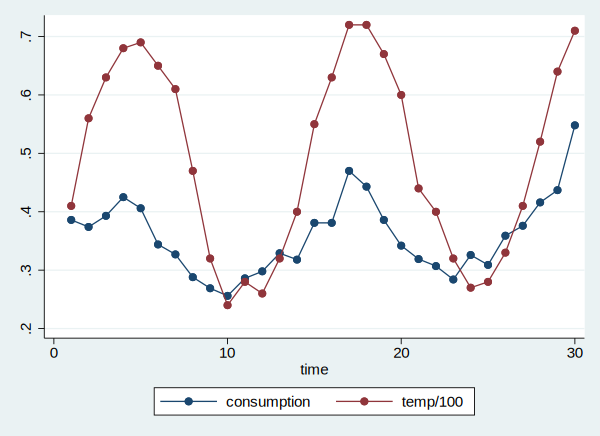
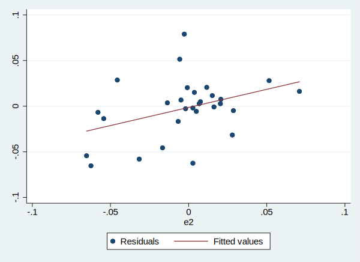
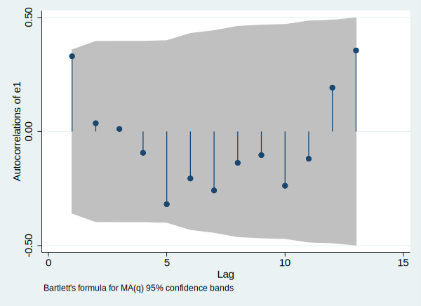
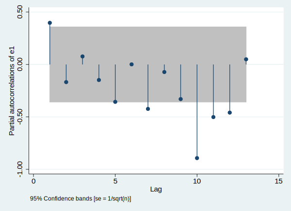

OLS回归不满足球形扰动怎么办? 模型存在自相关怎么办? 怎么检验数据是否存在自相关? 下面我们就回答这些问题。
数据介绍
以Hildreth and Lu对冰激淋需求函数的研究为例。数据集icecream.dta包含30个月度时间序列数据, 变量有: consumption(人均冰激淋的消费量), income(平均家庭收入), price(冰激淋价格), temp(平均温度), time(时间)。
加载数据&查看旗本情况
1 | use data/icecream.dta, clear |
因为是时间序列数据, 所以我们需要设置哪个变量是时间变量:
1 | tsset time |
time variable: time, 1 to 30 delta: 1 unit
描述一下数据的基本情况:
1 | describe |
Contains data from data/icecream.dta obs: 30 vars: 6 16 Sep 2010 09:53 size: 720 --------------------------------------------------------------------------------------------------------------------------------------------------------------------------------------------------------------------------------------------------------------- storage display value variable name type format label variable label --------------------------------------------------------------------------------------------------------------------------------------------------------------------------------------------------------------------------------------------------------------- time float %9.0g consumption float %9.0g price float %9.0g income float %9.0g temp float %9.0g temp100 float %9.0g temp/100 --------------------------------------------------------------------------------------------------------------------------------------------------------------------------------------------------------------------------------------------------------------- Sorted by: time
直观上, 我们可能觉得气温和冰激淋的消费量是相关的, 气温越高冰激淋的消费量可能越高, 而气温又和时间和季节有关, 所以我们可以画一个图来看下他们的情况:
1 | graph twoway connect consumption temp100 time |

上面的命令解释:
- graph 绘图命令
- twoway 二维图
- connect 折线图
- 剩下的都是变量, 最后一个变量指的是x轴
回归分析
下面我们使用三个变量来预测冰激淋的消费量:
1 | reg consumption temp price income |
Source | SS df MS Number of obs = 30 -------------+---------------------------------- F(3, 26) = 22.17 Model | .090250523 3 .030083508 Prob > F = 0.0000 Residual | .035272835 26 .001356647 R-squared = 0.7190 -------------+---------------------------------- Adj R-squared = 0.6866 Total | .125523358 29 .004328392 Root MSE = .03683 ------------------------------------------------------------------------------ consumption | Coef. Std. Err. t P>|t| [95% Conf. Interval] -------------+---------------------------------------------------------------- temp | .0034584 .0004455 7.76 0.000 .0025426 .0043743 price | -1.044413 .834357 -1.25 0.222 -2.759458 .6706322 income | .0033078 .0011714 2.82 0.009 .0008999 .0057156 _cons | .1973149 .2702161 0.73 0.472 -.3581223 .752752 ------------------------------------------------------------------------------
结果现实temp和income的系数都是显著的, 但是因为这是时间序列数据, 我们需要检验是否存在自相关。
自相关的检验
绘制残差和滞后残差的散点图
计算残差
1 | predict e1 ,res |
计算残差的1阶滞后
1 | g e2 = L.e1 |
绘制散点图(scatter), 绘制线性拟合曲线(lfit)
1 | twoway (scatter e1 e2) (lfit e1 e2) |

自相关图
自相关图指的是变量和变量的n阶滞后的相关, 我们通常查看自相关图来决定自相关的阶数:
1 | ac e1 |

这个图的x轴指的是滞后阶数n, y轴指的是自相关系数的大小, 我们可以从图中看到, 自相关主要是1阶, 因为2/3/4阶的相关都比较小, 而更高阶的相关基本不考虑。
偏自相关图
我们还可以查看偏自相关图:
1 | pac e1 |

BT检验
1 | estat bgodfrey |
Breusch-Godfrey LM test for autocorrelation --------------------------------------------------------------------------- lags(p) | chi2 df Prob > chi2 -------------+------------------------------------------------------------- 1 | 4.237 1 0.0396 --------------------------------------------------------------------------- H0: no serial correlation
p值小于0.05, 可以拒绝虚无假设: 不存在自相关。
Q检验
再来做一下Q检验:
1 | wntestq e1 |
Portmanteau test for white noise --------------------------------------- Portmanteau (Q) statistic = 26.1974 Prob > chi2(13) = 0.0160
Q检验的结果同样显示存在着自相关。
异方差自相关稳健的标准误(HAC)
该方法需要提前确定Newey-West估计量的滞后阶数p, 一般公式是$p=n^{1/4}$ 或者 $p=0.75n^{1/3}$
1 | newey consumption temp price income, lag(3) |
Regression with Newey-West standard errors Number of obs = 30 maximum lag: 3 F( 3, 26) = 27.63 Prob > F = 0.0000 ------------------------------------------------------------------------------ | Newey-West consumption | Coef. Std. Err. t P>|t| [95% Conf. Interval] -------------+---------------------------------------------------------------- temp | .0034584 .0004002 8.64 0.000 .0026357 .0042811 price | -1.044413 .9772494 -1.07 0.295 -3.053178 .9643518 income | .0033078 .0013278 2.49 0.019 .0005783 .0060372 _cons | .1973149 .3378109 0.58 0.564 -.4970655 .8916952 ------------------------------------------------------------------------------
结果显示, Newey-West的标准误与OLS标准误相差无几, 所以我们的结果基本没有变化。同时我们考虑p取不同的值会不会导致结果发生变化, 以便考察统计量对p的稳健性。
1 | newey consumption temp price income, lag(6) |
Regression with Newey-West standard errors Number of obs = 30 maximum lag: 6 F( 3, 26) = 52.97 Prob > F = 0.0000 ------------------------------------------------------------------------------ | Newey-West consumption | Coef. Std. Err. t P>|t| [95% Conf. Interval] -------------+---------------------------------------------------------------- temp | .0034584 .0003504 9.87 0.000 .0027382 .0041787 price | -1.044413 .9821798 -1.06 0.297 -3.063313 .9744864 income | .0033078 .00132 2.51 0.019 .0005945 .006021 _cons | .1973149 .3299533 0.60 0.555 -.4809139 .8755437 ------------------------------------------------------------------------------
结果显示, 统计量没有太大变化, 说明HAC还算稳健。
广义最小二乘法(FGLS)
广义最小二乘法在具体实现细节上又可以分为几种方法, 这里我们演示一下CO(Cochrane-Orcutt)和PW(Prais and Winsten)估计法。
CO估计法
1 | prais consumption temp price income, corc |
Iteration 0: rho = 0.0000 Iteration 1: rho = 0.4006 Iteration 2: rho = 0.4008 Iteration 3: rho = 0.4009 Iteration 4: rho = 0.4009 Iteration 5: rho = 0.4009 Iteration 6: rho = 0.4009 Iteration 7: rho = 0.4009 Cochrane-Orcutt AR(1) regression -- iterated estimates Source | SS df MS Number of obs = 29 -------------+---------------------------------- F(3, 25) = 15.40 Model | .047040596 3 .015680199 Prob > F = 0.0000 Residual | .025451894 25 .001018076 R-squared = 0.6489 -------------+---------------------------------- Adj R-squared = 0.6068 Total | .072492491 28 .002589018 Root MSE = .03191 ------------------------------------------------------------------------------ consumption | Coef. Std. Err. t P>|t| [95% Conf. Interval] -------------+---------------------------------------------------------------- temp | .0035584 .0005547 6.42 0.000 .002416 .0047008 price | -.8923963 .8108501 -1.10 0.282 -2.562373 .7775807 income | .0032027 .0015461 2.07 0.049 .0000186 .0063869 _cons | .1571479 .2896292 0.54 0.592 -.4393546 .7536504 -------------+---------------------------------------------------------------- rho | .4009256 ------------------------------------------------------------------------------ Durbin-Watson statistic (original) 1.021169 Durbin-Watson statistic (transformed) 1.548837
在结果的最后输出了DW值, DW估计量是评价是否存在自相关的, 由于DW初始值为1.02, 离2很远, 可以认为存在自相关, 然后再采用了CO估计法后, DW值改进为1.5。
PW估计法
1 | prais consumption temp price income, nolog |
Prais-Winsten AR(1) regression -- iterated estimates Source | SS df MS Number of obs = 30 -------------+---------------------------------- F(3, 26) = 14.35 Model | .04494596 3 .014981987 Prob > F = 0.0000 Residual | .027154354 26 .001044398 R-squared = 0.6234 -------------+---------------------------------- Adj R-squared = 0.5799 Total | .072100315 29 .002486218 Root MSE = .03232 ------------------------------------------------------------------------------ consumption | Coef. Std. Err. t P>|t| [95% Conf. Interval] -------------+---------------------------------------------------------------- temp | .0029541 .0007109 4.16 0.000 .0014929 .0044152 price | -1.048854 .759751 -1.38 0.179 -2.610545 .5128361 income | -.0008022 .0020458 -0.39 0.698 -.0050074 .0034029 _cons | .5870049 .2952699 1.99 0.057 -.0199311 1.193941 -------------+---------------------------------------------------------------- rho | .8002264 ------------------------------------------------------------------------------ Durbin-Watson statistic (original) 1.021169 Durbin-Watson statistic (transformed) 1.846795
参数nolog表示不显示迭代过程, 上表的结果显示, 收入income的系数变成了负数, 并且统计上不显著。
增加解释变量
前面提到, 自相关可能是因为模型设定不正确, 我们可以考虑增加解释变量, 下面我们增加temp变量的滞后值, 然后进行OLS回归:
1 | reg consumption temp L.temp price income |
Source | SS df MS Number of obs = 29 -------------+---------------------------------- F(4, 24) = 28.98 Model | .103387183 4 .025846796 Prob > F = 0.0000 Residual | .021406049 24 .000891919 R-squared = 0.8285 -------------+---------------------------------- Adj R-squared = 0.7999 Total | .124793232 28 .004456901 Root MSE = .02987 ------------------------------------------------------------------------------ consumption | Coef. Std. Err. t P>|t| [95% Conf. Interval] -------------+---------------------------------------------------------------- temp | --. | .0053321 .0006704 7.95 0.000 .0039484 .0067158 L1. | -.0022039 .0007307 -3.02 0.006 -.0037119 -.0006959 | price | -.8383021 .6880205 -1.22 0.235 -2.258307 .5817025 income | .0028673 .0010533 2.72 0.012 .0006934 .0050413 _cons | .1894822 .2323169 0.82 0.423 -.2899963 .6689607 ------------------------------------------------------------------------------
结果显示气温的滞后项的系数为负数, 并且是显著的, 这说明气温的滞后项越高冰激淋的消费量反而越低, 我还不能理解这其中的意义。不过, 我们下面再检验一下模型是否存在自相关的现象。
1 | estat bgodfrey |
Breusch-Godfrey LM test for autocorrelation --------------------------------------------------------------------------- lags(p) | chi2 df Prob > chi2 -------------+------------------------------------------------------------- 1 | 0.120 1 0.7292 --------------------------------------------------------------------------- H0: no serial correlation
结果显示, 自相关已经不存在了。
结论
好了上面就是我们检查自相关/解决自相关的方法, 至于为什么使用多种方法主要是为了检验你的结论是否具有方法的稳健性, 如果不同方法出现相互矛盾的结果, 我们可以列出是所有的结果, 然后做出自己的分析。
注意
本文由jupyter notebook转换而来, 您可以在这里下载notebook
有问题可以直接在下方留言
或者给我发邮件675495787[at]qq.com
请记住我的网址: mlln.cn 或者 jupyter.cn